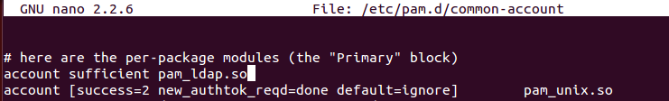

- Módulo: Administración de Sistemas Operativos
- Título del trabajo Cliente LDAP
- Componentes del grupo: Cinthia A. Vargas Jiménez
- Curso Académico: 2014/2015
- Fecha de entrega: NOVIEMBRE de 2014
Una máquina servidor LDAP instalado (actividad pasada)
Una máquina cliente LDAP
Indicamos la IP del "servidor".
Editamos el fichero /etc/ldap.conf , modificando en ou=users, dc=cinthia, dc=aula108 en las dos primeras líneas y en la tercera en "ou=group"
Editados el fichero "nsswitch.conf" y lo editamos
Agregamos las siguientes líneas a los cuatro ficheros que se muestran en las capturas

Instalamos "finger"
Teniendo encendidas las dos máquinas "Cliente y Servidor" ,ejecutamos finger